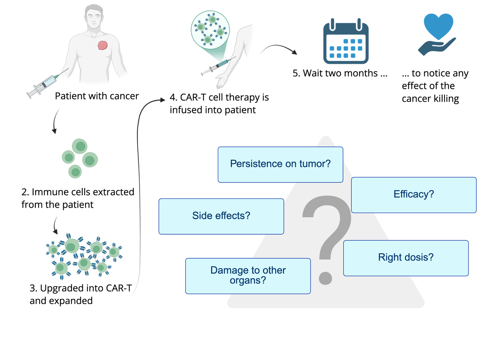

The imaging layer for living medicines
Making engineered cell therapies traceable in the body.
We tag engineered cells, so PET and SPECT scans can see them.
See how it worksTalk to usWhy this matters
Cell therapy is moving fast, but we still cannot see where the cells go.
Who needs it
- Cell-therapy developers. When a therapy fails, they cannot tell a CAR problem from a trafficking problem.
- Clinicians and patients. After infusion there is no direct way to see whether the cells reached the tumour.
- Regulators and sponsors. They expect the biodistribution of cell and gene therapies to be characterised (EMA/CAT/22473/2025).
Why now
- In vivo CAR-T is arriving. 76 trials are registered (Radigene analysis of public registries, 29–30 October 2026). When cells are made inside the patient, there is no release assay and no controlled dose.
- Solid tumours still fail. About 90% of cancer therapies for solid tumours, immunotherapy included, fail, with poor delivery to the tumour as a main reason (Maeda & Khatami, 2018).
Why Radigene
- It follows the therapy. The reporter sits on the engineered cells, so the scan shows them, not tissue metabolism.
- Designed for hospitals. The tracer is designed around gallium-68, made on site with a generator, without a cyclotron.

The question clinicians ask first
Is that lesion the cancer, or the cure?
After infusion, a lesion can brighten because the tumour grows, or because a wave of activated T cells has arrived. A metabolic scan shows both as hot. A reporter on the engineered cells aims to tell them apart.
The approach
A reporter in the cell. A tracer that binds it. A scan that shows where the cells are.
1 · Tag
A compact reporter gene
Built into the cell therapy alongside its therapeutic gene.
2 · Image
A radiolabelled tracer
Binds the reporter on the cell, so that PET or SPECT can see it.
3 · Learn
A picture of the living drug
Where the engineered cells are, across the whole body.
What we aim to enable
From a black box to a measurable drug.
Compare therapies
Compare competing cell therapies head to head by how well they reach their target.
Predict response early
An early imaging signal as a biomarker of who responds and who is at risk.
Design better trials
Optimise dose and delivery with cell-specific imaging.
These are the aims of the platform.
Recognition and support
Built for the clinic.
Radigene is taking the approach towards clinical use.
The Gratama prize 2026
The Leiden area, the Netherlands
Talk to us
Working on a cell therapy? Laura and Cas would like to hear about it.
Tell us which cells you engineer and what you need to see. We read every message ourselves and reply in person.
Request a pilotInvestor? Ask for the overview